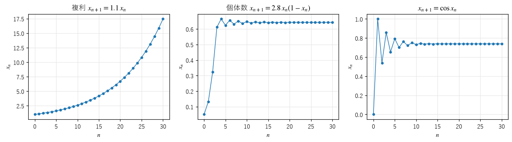
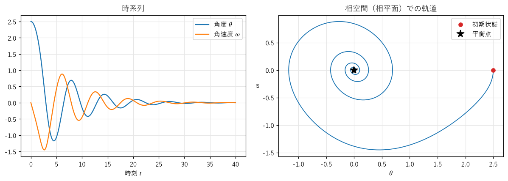

第 1 章 力学系とは何か
この章では、本書全体の土台となる「力学系」の考え方を説明する。力学系という言葉は物理学の「力学」に由来するが、扱う対象は物体の運動に限らない。人口、株価、気温、画面上の点の位置など、時間とともに変化するものなら何でも力学系として扱える。
状態と時間発展の規則
力学系（dynamical system）は、次の 2 つの組で決まる。
状態（state）：ある時刻に、系がどうなっているかを表す量の組。たとえば振り子なら、角度と角速度の 2 つの数で状態が決まる。
時間発展の規則（time evolution rule）：現在の状態から、少し先の状態を決める規則。
状態として取りうる値全体の集合を状態空間（state space）または相空間（phase space）という。振り子の状態空間は、角度と角速度を座標とする平面である。状態空間の 1 点が、系のある瞬間の様子をすべて表す。時間が進むと、その点は規則に従って状態空間の中を動き、1 本の曲線や点列を描く。これを軌道（orbit、trajectory）という。
力学系の重要な性質は、規則が決定論的（deterministic）であることである。つまり、現在の状態が決まれば、未来の状態はただ 1 つに決まる。サイコロのような偶然の要素は含まない。それでも、第 II 部で見るように、決定論的な規則から、偶然のように見える振る舞い（カオス）が生まれることがある。
離散時間と連続時間
時間の扱い方によって、力学系は 2 種類に分かれる。
離散時間の力学系 |
連続時間の力学系 |
|
|---|---|---|
時間 |
\(n = 0, 1, 2, \ldots\) と飛び飛びに進む |
\(t\) が連続的に進む |
規則 |
写像 \(x_{n+1} = f(x_n)\) |
微分方程式 \(\dot{x} = F(x)\) |
軌道 |
点列 \(x_0, x_1, x_2, \ldots\) |
曲線 \(x(t)\) |
例 |
年ごとの人口、1 フレームごとの粒子の位置 |
振り子の運動、惑星の運動、電気回路 |
離散時間の力学系では、関数 \(f\) を繰り返し適用する。初期値 \(x_0\) から、
と計算していく。\(f\) を \(n\) 回適用したものを \(f^n\) と書くと、\(x_n = f^n(x_0)\) である。このような計算を反復（iteration）という。
連続時間の力学系では、状態の変化の速さ（時間微分）が、現在の状態の関数として与えられる。微分方程式 \(\dot{x} = F(x)\) は、「状態 \(x\) にいるとき、状態は速度 \(F(x)\) で変化する」という意味である。\(F\) を状態空間の各点に矢印として描いたものをベクトル場（vector field）という。軌道は、ベクトル場の矢印に沿って流れる曲線になる。
2 つの種類は、互いに行き来できる。連続時間の力学系を一定の時間間隔 \(\Delta t\) ごとに観測すれば、離散時間の力学系になる。第 3 章で扱う数値解法は、まさにこの考え方で微分方程式を写像に置き換える。逆に、第 6 章のポアンカレ断面のように、連続時間の軌道から特定の瞬間だけを取り出して、写像として調べる方法もある。
離散時間の力学系の例
図 2 に、離散時間の力学系の例を 3 つ示す。


図 2 3 つの写像の軌道。左から、複利、個体数のモデル、余弦関数の反復。
複利：\(x_{n+1} = 1.1\,x_n\) は、毎年 10% の利息が付く預金の残高を表す。残高は指数関数的に増え続ける。
個体数のモデル：\(x_{n+1} = r x_n (1 - x_n)\) は、生物の個体数（環境の上限に対する割合）を表すモデルで、ロジスティック写像（logistic map）と呼ばれる。個体数が少ないうちは \(r\) 倍に増えるが、多くなると餌の不足などで増え方が鈍る。\(r = 2.8\) では、個体数は約 0.643 に落ち着く。
余弦関数の反復：電卓に適当な数を入れ、\(\cos\) のボタン（ラジアン単位）を押し続けると、表示は約 0.739 に落ち着く。この値は \(\cos x = x\) の解である。
後の 2 つの例では、軌道がある値に近づいて落ち着いた。このように、\(f(x^*) = x^*\) を満たし、そこから動かない点 \(x^*\) を固定点（fixed point）という。ロジスティック写像は、パラメータ \(r\) を大きくすると、固定点に落ち着かず、周期的な振動や、不規則な変動を示すようになる。この様子は第 4 章で詳しく調べる。
反復の計算は、Python で次のように書ける。
18def iterate(f: Callable[[float], float], x0: float, n: int) -> list[float]:
19 """x0 に写像 f を n 回適用し、x0 を含む n + 1 個の値（軌道）を返す."""
20 xs = [x0]
21 for _ in range(n):
22 xs.append(f(xs[-1]))
23 return xs
連続時間の力学系の例
摩擦のある振り子を考える。振り子が真下から測った角度を \(\theta\)、角速度を \(\omega = \dot{\theta}\) とすると、運動方程式は次のようになる（重力加速度と振り子の長さの比を 1 とした）。
右辺の \(-\sin\theta\) は重力による復元力、\(-\gamma\,\omega\) は速度に比例する摩擦力（\(\gamma > 0\)）を表す。状態は \((\theta, \omega)\) の 2 つの数なので、状態空間は平面になる。2 次元の相空間を相平面（phase plane）ともいう。
図 3 は、\(\gamma = 0.3\)、初期状態 \((\theta, \omega) = (2.5, 0)\) の軌道である。左は角度と角速度を時刻の関数として描いた時系列（time series）、右は同じ運動を相平面に描いたものである。


図 3 減衰振り子の時系列（左）と、相平面上の軌道（右）
時系列では振動がだんだん小さくなる様子が、相平面では軌道が渦を巻きながら原点に近づく様子が見える。原点 \((0, 0)\) は振り子が真下で静止した状態で、\(\dot{\theta} = \dot{\omega} = 0\) となるので、そこに置けば動かない。連続時間の力学系で、このように動かない点を平衡点（equilibrium point）という。離散時間の固定点に当たる。
アトラクタ
減衰振り子では、初期状態をどこに選んでも（ちょうど真上で静止させた場合などを除いて）、軌道は最終的に真下の平衡点に近づく。このように、周りの軌道を引き寄せる集合をアトラクタ（attractor）という。アトラクタに近づくまでの途中の振る舞いを過渡状態（transient）という。
アトラクタは 1 点とは限らない。
固定点（平衡点）：軌道が 1 点に落ち着く。減衰振り子、\(r = 2.8\) のロジスティック写像。
周期軌道：軌道が同じ経路を繰り返しなぞる。心臓の拍動や、第 3 章で扱うリミットサイクル。
ストレンジアトラクタ：軌道が繰り返しのない複雑な動きを続けるが、状態空間の限られた領域から出ない。この集合はフラクタルな構造を持つ。第 6 章で扱う。
アトラクタは、力学系の「長期的な振る舞い」を代表するものである。本書の図の多くは、過渡状態を捨て、アトラクタ上の軌道だけを描いている。
決定論と予測可能性
1814 年、数学者のラプラスは、「宇宙のすべての粒子の現在の位置と速度を知る知性があれば、未来を完全に予測できる」と考えた。決定論的な力学系では、現在の状態が未来を一意に決めるので、原理的にはこの考え方は正しい。
しかし、実際には現在の状態を無限の精度で知ることはできない。測定値にはわずかな誤差が必ず含まれる。多くの力学系では、初期値のわずかな誤差は、時間が経っても小さいままか、ゆっくりとしか大きくならない。ところが、ある種の力学系では、誤差が指数関数的に大きくなり、短い時間で予測が意味を失う。これがカオス（chaos）である。カオスは「決定論的なのに予測できない」という一見矛盾した性質を持つ。第 II 部では、この性質を具体的な例で調べ、数値で測る方法を学ぶ。
力学系と創発
創発（emergence）は、個々の要素の単純な振る舞いからは予想しにくい、全体としての性質やパターンが現れることを指す。鳥の群れの動き、シマウマの縞模様、ライフゲームのグライダーなどが例としてよく挙げられる。
創発の多くは、力学系の言葉で表せる。たとえばライフゲームは、格子上の各セルの生死を、近傍のセルの状態から決める規則であり、盤面全体の状態を 1 つの点とみなせば、巨大な状態空間を持つ離散時間の力学系である。鳥の群れのシミュレーション（ボイド）も、全個体の位置と速度を状態とする力学系である。
本書では主に、状態を表す数が 1〜3 個程度の、小さな力学系を扱う。小さな力学系でも、反復によって驚くほど複雑な振る舞いが生まれることが分かる。これは、要素の数が多いことだけが複雑さの源ではないことを示している。第 11 章では、空間に広がった多数の要素からなる力学系（結合写像格子、反応拡散系）を取り上げ、小さな力学系の知識が、パターンが生まれる仕組みの理解にどう役立つかを見る。
まとめ
力学系は、状態と時間発展の規則の組で決まる。状態全体の集合を状態空間（相空間）、時間とともに状態がたどる経路を軌道という。
離散時間の力学系は写像の反復 \(x_{n+1} = f(x_n)\) で、連続時間の力学系は微分方程式 \(\dot{x} = F(x)\) で表す。
軌道を引き寄せる集合をアトラクタという。アトラクタには、固定点、周期軌道、ストレンジアトラクタなどがある。
決定論的な力学系でも、初期値の誤差が急速に大きくなる場合（カオス）は、長期的な予測ができない。